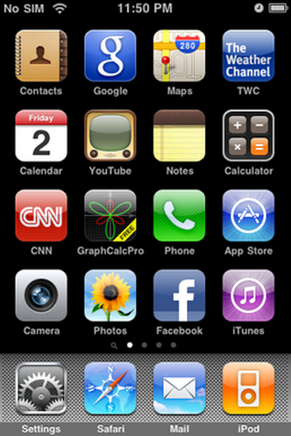

iOS 3
O iPhone OS 3 é o terceiro maior lançamento do sistema operacional móvel iOS desenvolvido pela Apple Inc. , sendo o sucessor do iPhone OS 2 . Foi anunciado em 17 de março de 2009 e foi lançado em 17 de junho de 2009. Foi sucedido pelo iOS 4 em 21 de junho de 2010; a nova versão abandonou a convenção de nomenclatura "iPhone OS". O iPhone OS 3 foi a última versão a usar a convenção de nomenclatura "iPhone OS".
O iPhone OS 3 adicionou uma bolha de diálogo "cortar, copiar ou colar" em todo o sistema, permitindo que os usuários movessem mais facilmente o conteúdo. Ele também introduziu o Spotlight , um recurso de indexação de pesquisa projetado para ajudar os usuários a localizar informações específicas em seus dispositivos, como contatos, mensagens de e-mail ou aplicativos. A tela inicial foi expandida para permitir que os usuários adicionem 11 páginas, exibindo um total de 180 aplicativos. O aplicativo Mensagens recebeu suporte para MMS , enquanto o aplicativo Câmera recebeu suporte para gravação de vídeo no iPhone 3GS e um novo aplicativo "Memorandos de voz" permite que os usuários gravem suas vozes.

Desenvolvedor Apple Inc.
Modelo de origem Fechado , com componentes de código aberto
lançamento inicial 17 de junho de 2009
Último lançamento 3.2.2 (7B500) / 11 de agosto de 2010
Tipo de kernel Híbrido ( XNU )
Licença EULA proprietário, exceto para componentes de código aberto
Antecessor iPhone OS 2
Sucessor iOS 4
Apps
- iTunes
- Loja de aplicativos
- Texto
- Calendário
- Fotos
- Câmera
- Youtube
- Ações
- Mapas
- Clima
- Relógio
- Calculadora
- Notas
- Definições
- Memos de voz
Dock Dock
- Telefone
- Enviar
- Safári
- iPod
História
O iPhone OS 3 foi anunciado em 17 de março de 2009, com uma versão beta disponível para desenvolvedores no mesmo dia.
O iPhone OS 3 foi oficialmente lançado em 17 de junho de 2009.
Recursos do sistema
Recortar, copiar ou colar
O iPhone OS 3 introduziu uma caixa de diálogo "cortar, copiar ou colar" quando os usuários tocaram duas vezes no texto. O botão "colar" incorporaria qualquer coisa armazenada na área de transferência do dispositivo na área marcada.
Spotlight
O Spotlight é um recurso de indexação e pesquisa em todo o sistema, com o objetivo de ajudar os usuários a pesquisar em seus dispositivos por contatos específicos, mensagens de e-mail, compromissos de calendário, arquivos de multimídia, aplicativos e muito mais. É acessado ao deslizar para a direita a partir da tela inicial.
Tela inicial
O iPhone OS 3 expande o número máximo de páginas na tela inicial para 11, para um total de 180 aplicativos.
Recursos do aplicativo
Mensagens
O aplicativo Mensagens recebeu suporte nativo para o Serviço de Mensagens Multimídia (MMS), permitindo que os usuários enviem e recebam mensagens que também contenham fotos, contatos, locais, gravações de voz e mensagens de vídeo.
Câmera e Fotos
O aplicativo Câmera introduziu gravação de vídeo para o iPhone 3GS .
O aplicativo Fotos apresentava um novo botão de cópia e a capacidade de excluir várias fotos de uma só vez.
Lembretes de voz
O iPhone OS 3 adicionou um aplicativo "Voice Memos", permitindo aos usuários gravar suas vozes.